Chapter 2 [EDA]
In this section, we will brief through the data by creating plots for all variables under y=yes and y=no and see if there is differences in distribution.
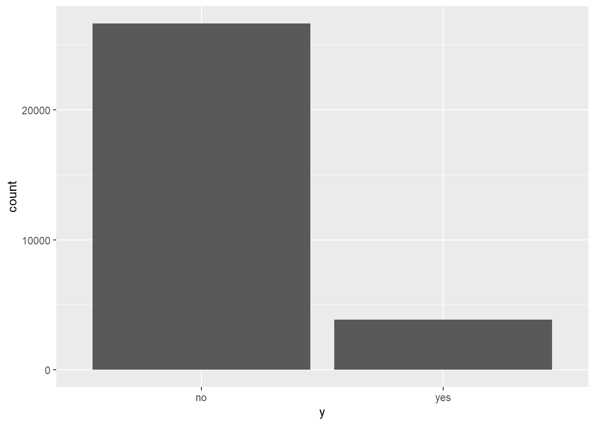
The plot above is a bar plot showing the counts of the response variables y, defined by whether the person has term deposit. It is quite obvious that there are more cases with y equal to no than ones with y equal to yes. However, considering the number of cases included, we do not have to do any sampling or weight adjustment to the data.
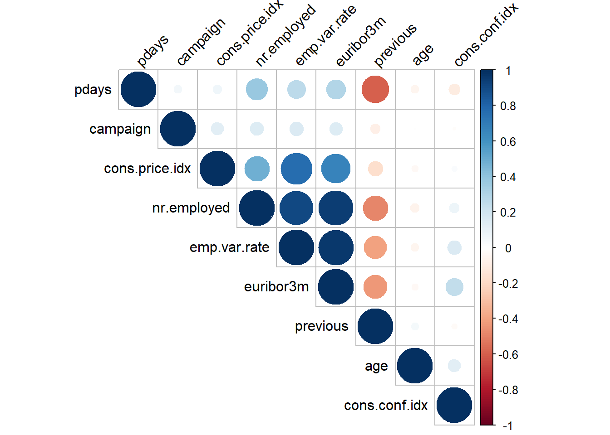
To begin with, if we take all the numerical data as a whole, we may want to examine if multicolinearity exists in this data. The plot above shows the correlation matrix of all numerical models. From the plot above, we identify that the correlation are high among nr.employed, emp.var.rate, and euribor3m. The coreelation between cons.price.idx and emp.var.rate is also high. Hence we may drop nr.employed and emp.var.rate to avoid the problem of multicolinearity at the moment.
In the section below, we will take a look of each variable and examine if there are any explicit pattern showing correlation between variables and the target variable.
1 - age (numeric). After scaling the age variables, I plot a overlapped numerical histogram showing distribution of age for each y category as shown below. However, there is no obvious difference in pattern of two different categories.
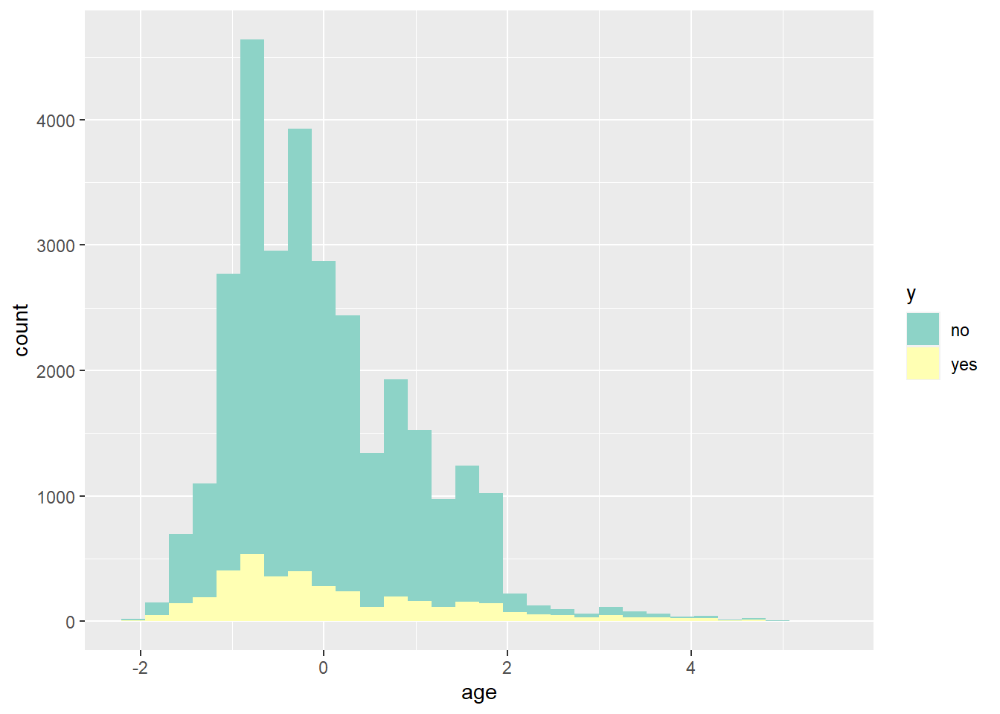
2 - job : type of job (categorical: ‘admin.’, ‘bluecollar’, ‘entrepreneur’, ‘housemaid’, ‘management’, ‘retired’, ‘self-employed’, ‘services’, ‘student’, ‘technician’, ‘unemployed’, ‘unknown’). The plot shown as follow indicates the distribution of yes and no among all the categories. There is no obvious pattern observed from the plot. We may examine the specific impact to the target variable of falling into each category in the following models.
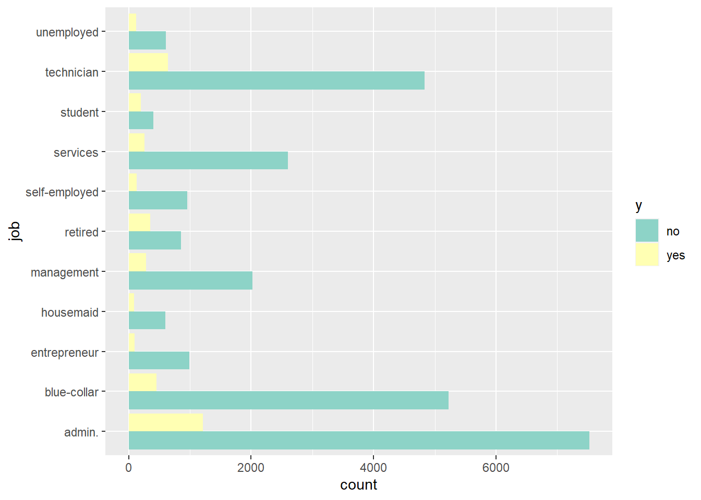
3 - marital : marital status (categorical: ‘divorced’,‘married’,‘single’,‘unknown’; note: ‘divorced’ means divorced or widowed). The plot shown as follow indicates the distribution of yes and no among all the categories. There is no obvious pattern observed from the plot. We may examine the specific impact to the target variable of falling into each category in the following models.
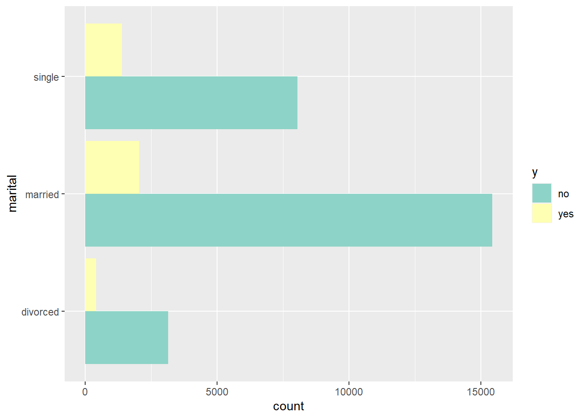
4 - education (categorical: ‘basic.4y’,‘basic.6y’,‘basic.9y’,‘high.school’,‘illiterate’,‘professional.course’,‘university.degree’,‘unknown’). The plot shown as follow indicates the distribution of yes and no among all the categories. There is no obvious pattern observed from the plot. We may examine the specific impact to the target variable of falling into each category in the following models.
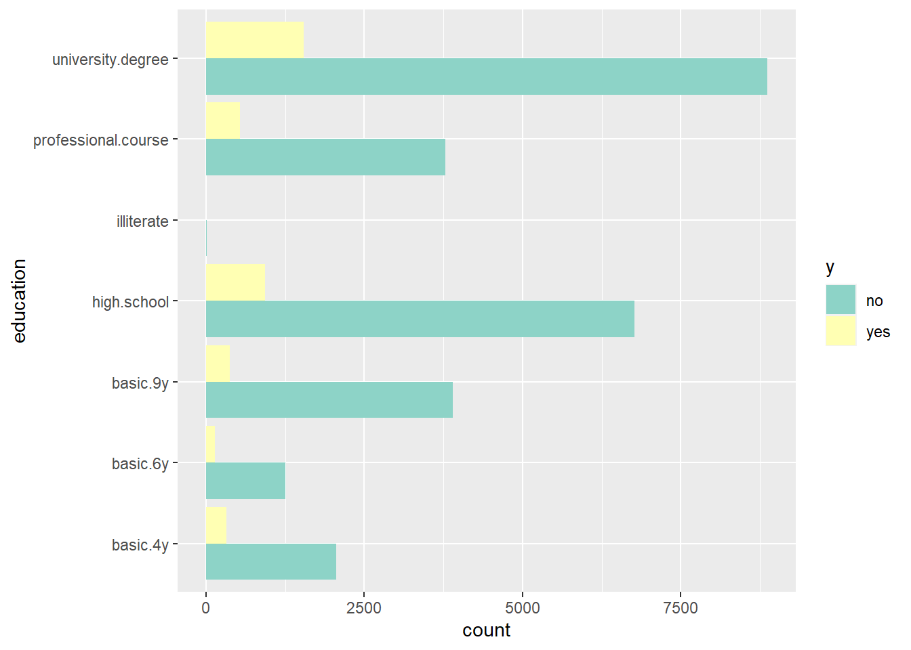
5 - default: has credit in default? (categorical: ‘no’,‘yes’,‘unknown’). The plot shown as follow indicates the distribution of yes and no among all the categories. There is no obvious pattern observed from the plot. We may examine the specific impact to the target variable of falling into each category in the following models.
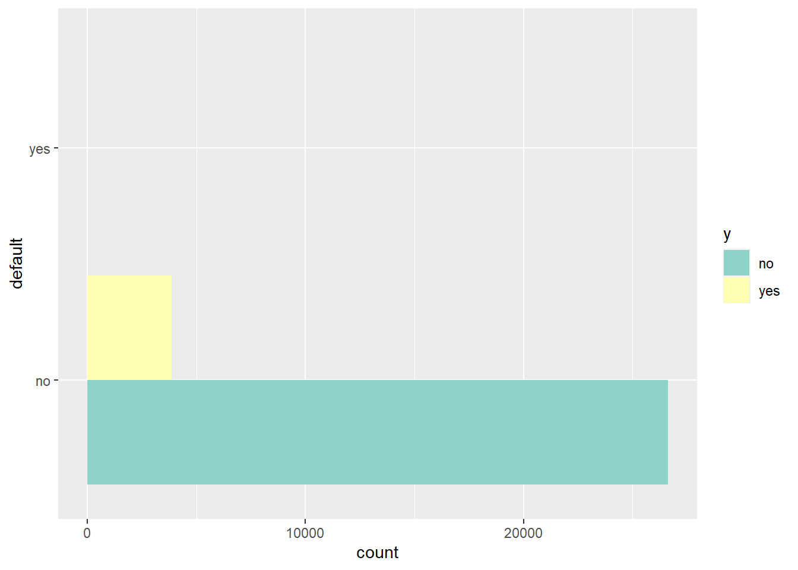
6 - housing: has housing loan? (categorical: ‘no’,‘yes’,‘unknown’). The plot shown as follow indicates the distribution of yes and no among all the categories. There is no obvious pattern observed from the plot. We may examine the specific impact to the target variable of falling into each category in the following models.
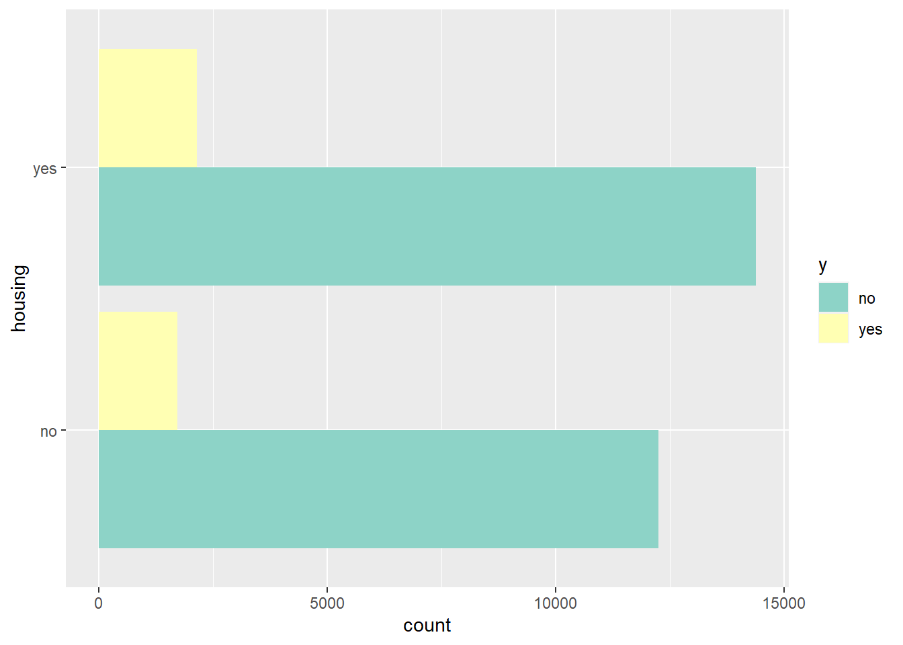
7 - loan: has personal loan? (categorical: ‘no’,‘yes’,‘unknown’). The plot shown as follow indicates the distribution of yes and no among all the categories. There is no obvious pattern observed from the plot. We may examine the specific impact to the target variable of falling into each category in the following models.
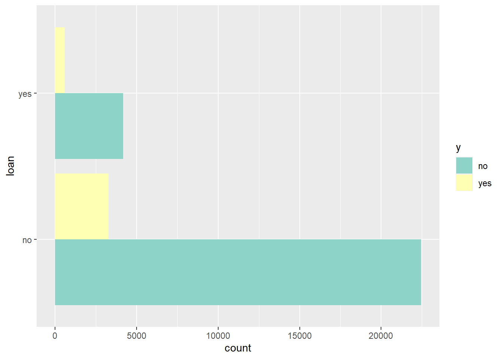
# related with the last contact of the current campaign:
8 - contact: contact communication type (categorical: ‘cellular’,‘telephone’). The plot shown as follow indicates the distribution of yes and no among all the categories. There is no obvious pattern observed from the plot. We may examine the specific impact to the target variable of falling into each category in the following models.
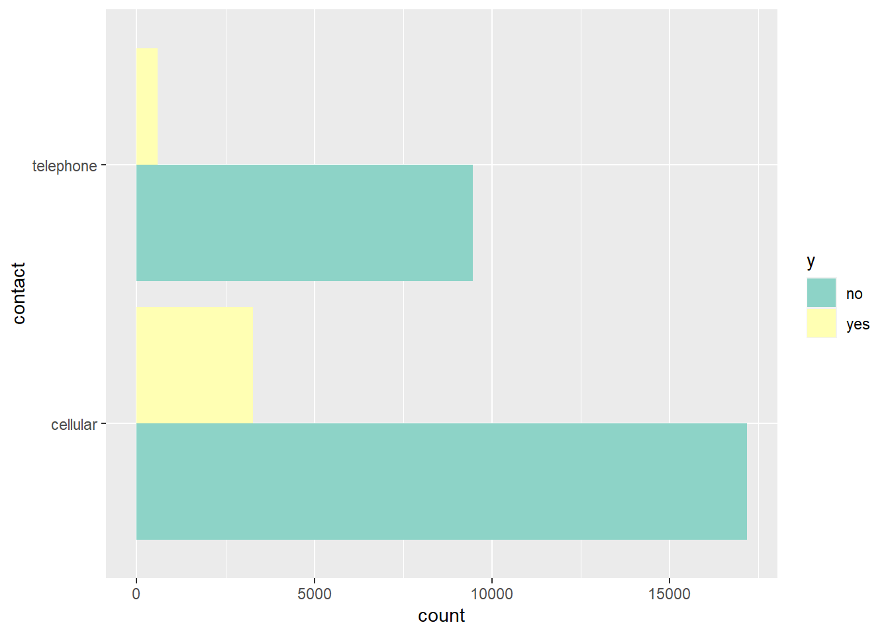
# other attributes:
12 - campaign: number of contacts performed during this campaign and for this client (numeric, includes last contact). After scaling the campaign variables, I plot a overlapped numerical histogram showing distribution of campaign for each y category as shown below. However, there is no obvious difference in pattern of two different categories.
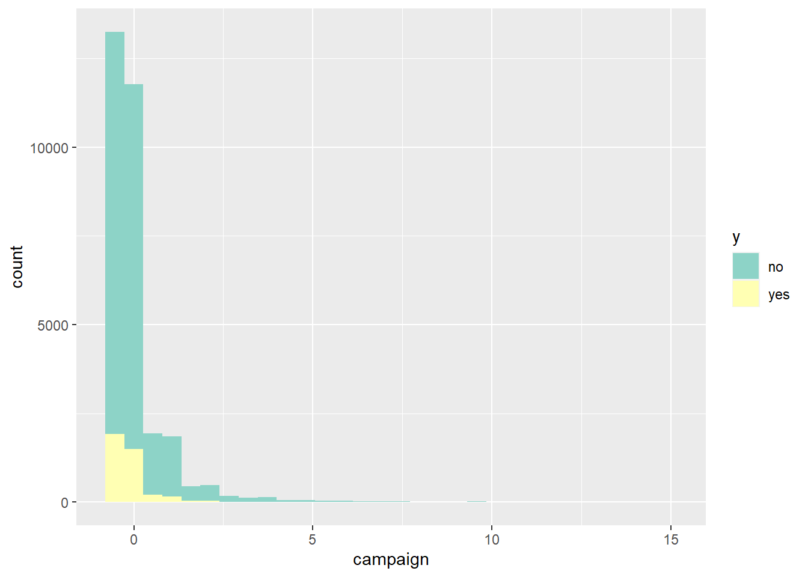
13 - pdays: number of days that passed by after the client was last contacted from a previous campaign (numeric; 999 means client was not previously contacted). After scaling the pdays variables, I plot a overlapped numerical histogram showing distribution of age for each y category as shown below. It is worth noticing that when the scaled pdays is negative, the proportion of client with term deposit largely increases. This is a indication of influential variable.
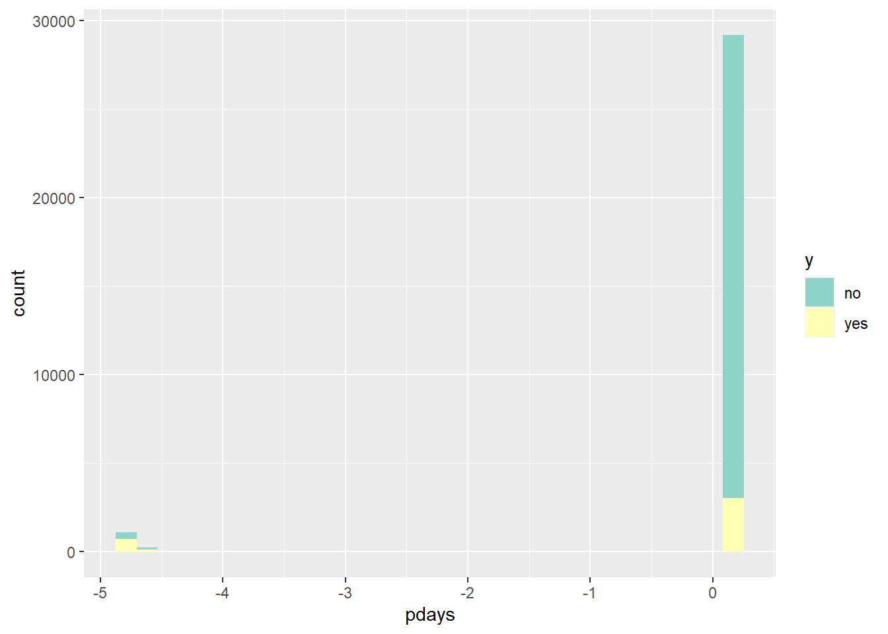
14 - previous: number of contacts performed before this campaign and for this client (numeric). After scaling the previous variables, I plot a overlapped numerical histogram showing distribution of previous for each y category as shown below. However, there is no obvious difference in pattern of two different categories.
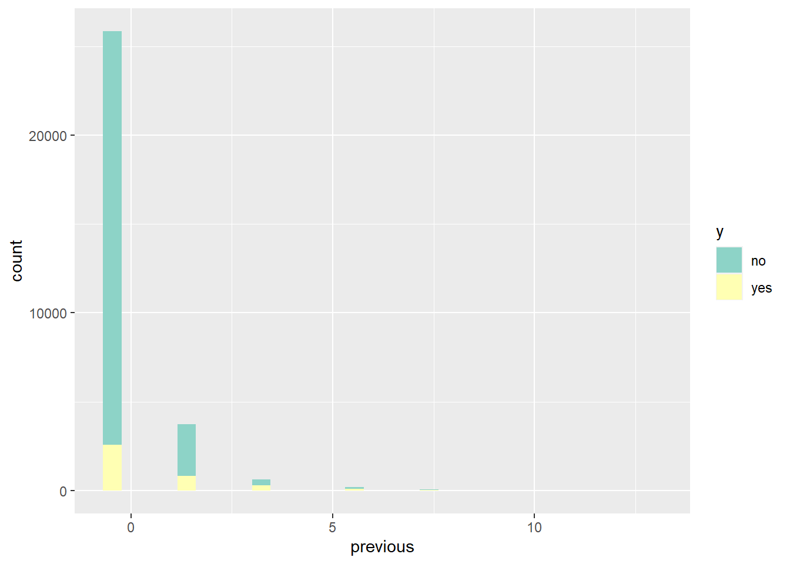
15 - poutcome: outcome of the previous marketing campaign (categorical: ‘failure’,‘nonexistent’,‘success’). The plot shown as follow indicates the distribution of yes and no among all the categories. It is quite obvious that the proportion of having term deposit is much higher for those client has successful previous campaigns. This may be an influential variable to the target variable y.
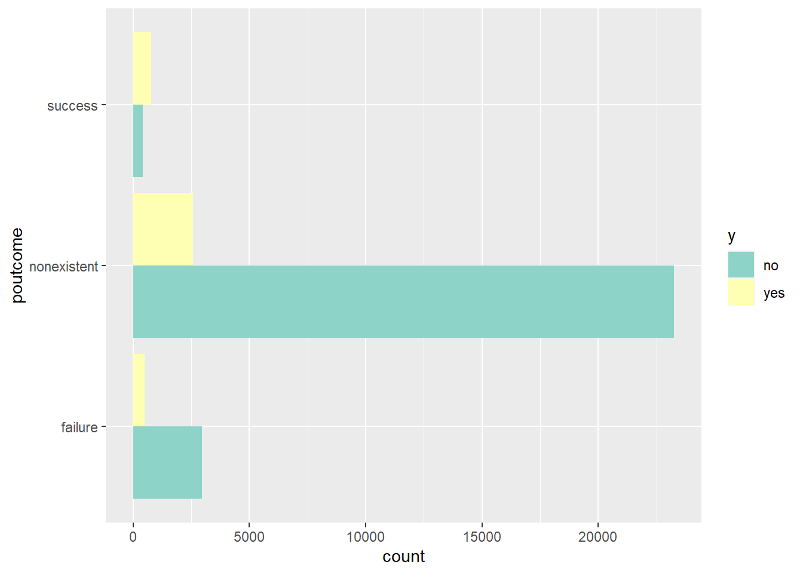
# social and economic context attributes
17 - cons.price.idx: consumer price index - monthly indicator (numeric). This variable is renamed as priceIndex for the following analysis. After scaling the priceIndex variables, I plot a overlapped numerical histogram showing distribution of priceIndex for each y category as shown below. It is worth noticing that when the scaled priceIndex is smaller than -1 or larger than 2, the proportion of client with term deposit largely increases. This is a indication of influential variable.
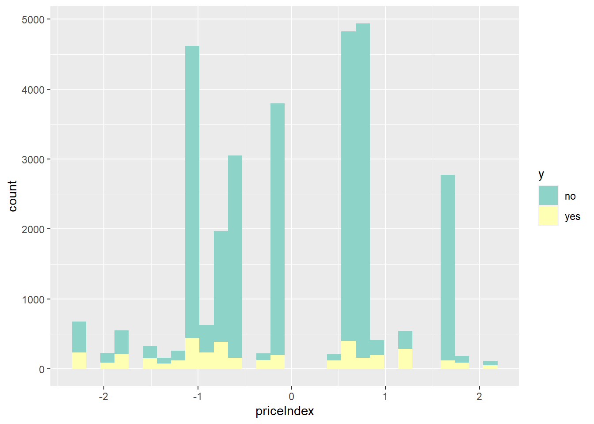
18 - cons.conf.idx: consumer confidence index - monthly indicator (numeric). This variable is renamed as confidenceIndex for the following analysis. After scaling the confidenceIndex variables, I plot a overlapped numerical histogram showing distribution of confidenceIndex for each y category as shown below. It is worth noticing that when the scaled confidenceIndex is smaller than -1.5 or larger than 1, the proportion of client with term deposit largely increases. This is a indication of influential variable.
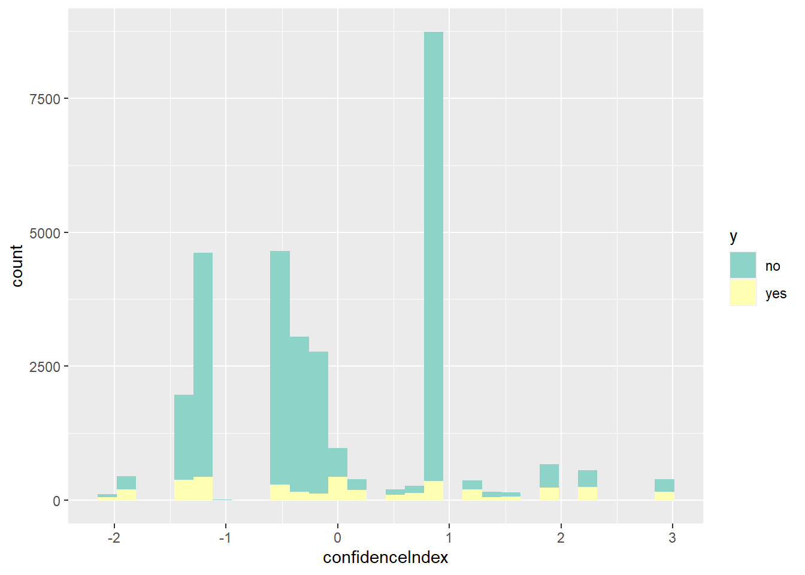
19 - euribor3m: Euro Interbank Offered Rate 3 month rate - daily indicator (numeric). This variable is renamed as InterestRateindex for the following analysis. After scaling the InterestRateindex variables, I plot a overlapped numerical histogram showing distribution of InterestRateindex for each y category as shown below. It is worth noticing that when the scaled interestRateIndex is smaller than -1.2 , the proportion of client with term deposit largely increases. This is a indication of influential variable.
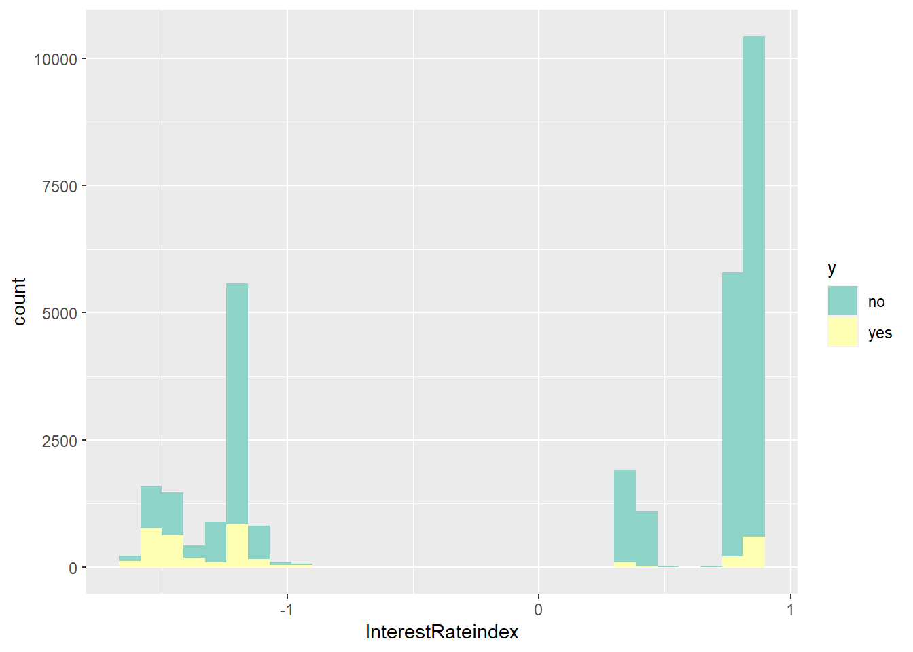